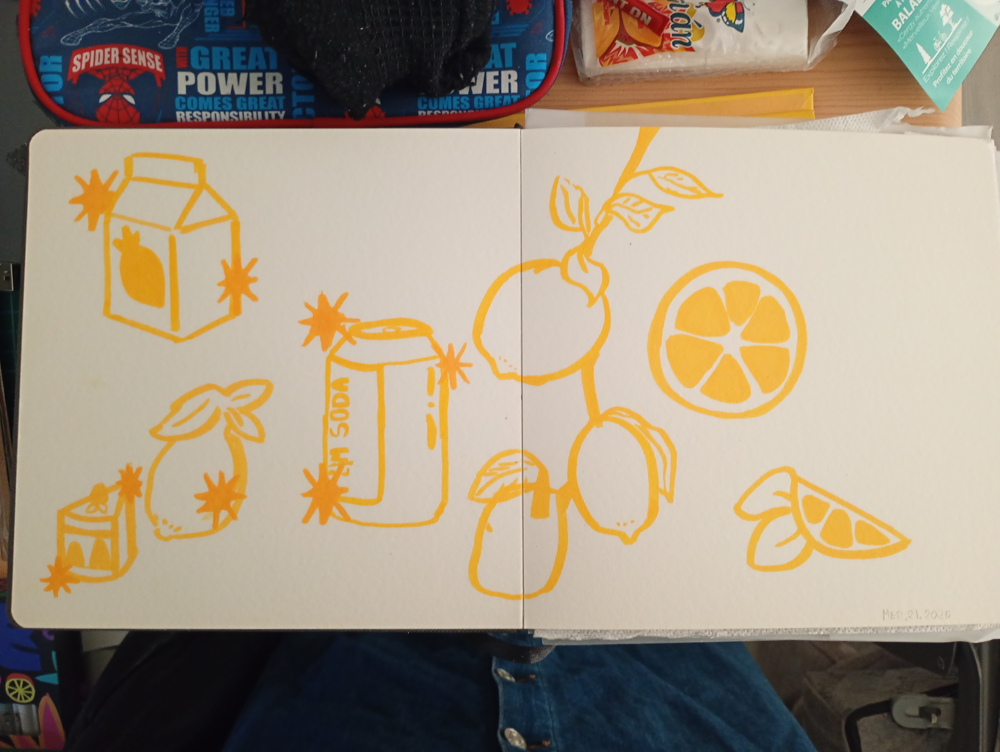
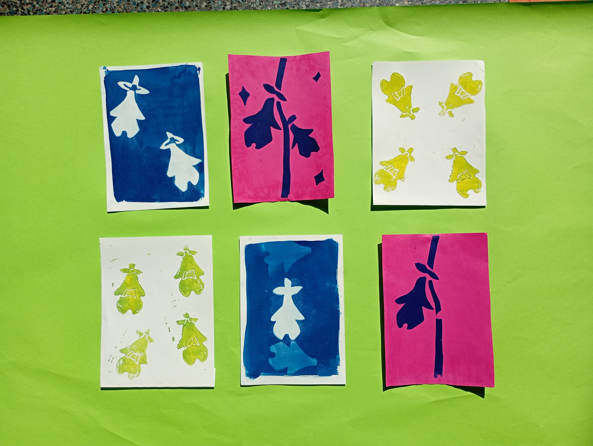
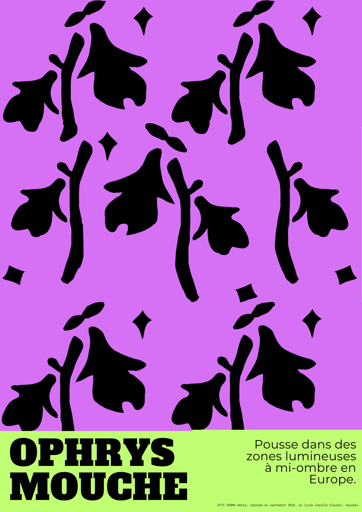
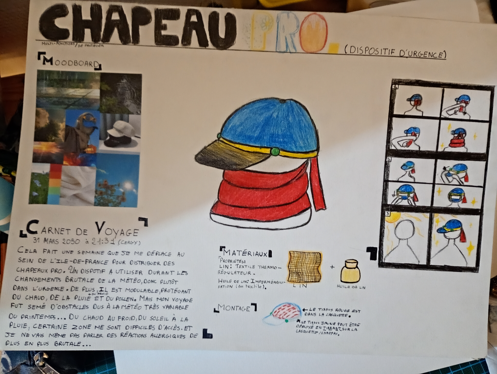
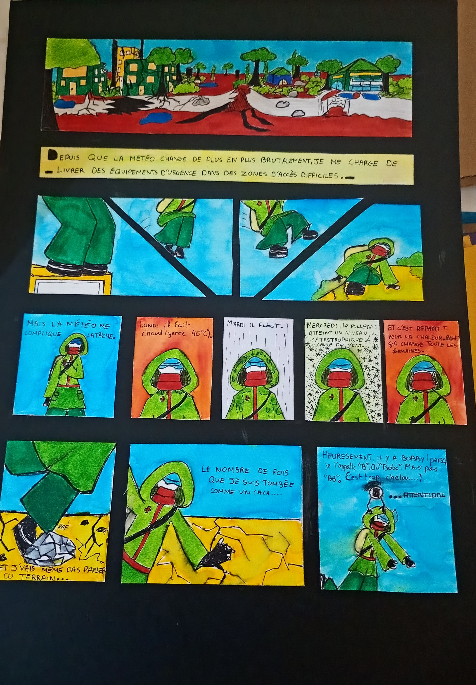

I thik this a portofolio ?. It's just showing some work I did (mostly school projects). Since most information on the picture are in French, I'll try to add some context or details in English :P.
I was looking at inspiration on Pinterest, and I've keep founding image of lemons. So I've draw lemons. Because why not ?

I don't know what had passed in my mind. Why I had though that it was a good idea to make pixel art by hand ??
A poster about a flower I've seen in a nature reserve : the fly orchid. It was for a school project.
I had to make som experimentation before making the poster.
Experimentation (cyanotype and linogravure)

Alternative poster

Final poster

Again, another highschool project ( but I really liked this one !), to understand what I have do, you need a little bit of context.
"In 2050, the season are not longer what we had knew in Ile de France (a state in France): in autumn it's raining soo much that there's practically inondations all of the time, during winter, the usual temperature is - 10 ° celsius and it's snowing, so no more electricity. During Spring, the weather is unpredictable, for four days it's raining ( a lot) ,then it's really hot ( like 40° Celsius),but it's not only that. People do not know what to wear anymore, so they become sick easily. And let's not talk about the explosions of allergies...And finally, there's summer : Heatwave, heatwave and heatwave.40° (Celsius) and water is missing from this season."
This project worked in phases : one in group and the others alone.
First phase : Experimentation
We had to make groups of four ( I've been adopted in one lol) and choose a season : we decided to take Spring and our teacher asked us
to make samples for resolving a problematic about our season.
I don't have have the picutre of them :(.
Second phase: Imagining an object from a sample
To make it short, each sample we had made have notions : to protect from rain, multitask, filtering, etc, and I've choose multitask and imagine a hat that can protect the user from the rain, the cold and from the pollen ( due to the rise of the allergies to it). And we had to do a design board about it.

It's a dispotive I've named "Chapeau'pro" Chapeau = hat, and the pro comes frome the word 'protection'. I've write a statement of intent; it's almost the same thing as the context I've write above, it's just more focused on Spring and the object I've draw.
Finally, the last phase : the story
You may had think that the next phase was to build it ? Heheheh, people, my highschool have a tightbudget ! And that's not what my teacher asked us to do. We had to make a page of 'comic' showing our object. I've made it last minute, and I had a pretty good grade lol (17/20).

The character is talking about the job she's doing since the weather becamed instable ( she's delivering emergency tools with the help of a little robot :p ).I've used watercolor pen and a liner to draw it, but the liner wasn't waterproof, that's why the resultis a bit messy (and it was my first time using them so I wasn't the best lol).